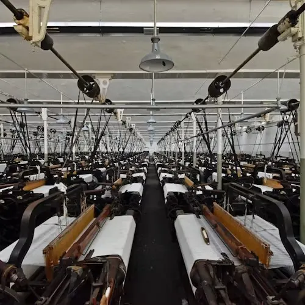

01Fabric Manufacturing
Weaving and knitting in the width, weave and weight you need – from everyday cloth to textured handloom.
What we offer
- Woven fabrics in cotton, linen, silk blends and jute
- Knitted fabrics – jersey, rib and interlock
- Handloom for textured, artisanal cloth
- Custom width, weave and weight (GSM)
- Yarn selection and a fabric sample before bulk
WovenKnittedHandloom
Best for: Garment makers, boutiques and designers who need their own fabric.